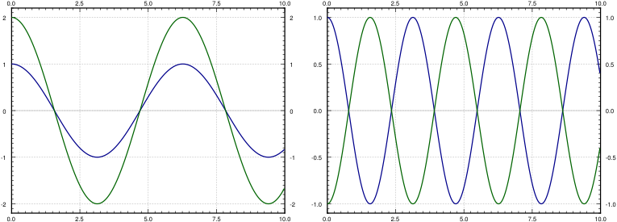

While we did say that we can usually only study first-order systems, it is sometimes more convenient to analyze the system in the way it arises naturally. For example, consider 3 masses connected by springs between two walls. We could pick any higher number, and the math would be essentially the same, but for simplicity, we pick 3 right now. We also assume no friction, that is, the system is undamped. The masses are \(m_1\text{,}\)\(m_2\text{,}\) and \(m_3\) and the spring constants are \(k_1\text{,}\)\(k_2\text{,}\)\(k_3\text{,}\) and \(k_4\text{.}\) Let \(x_1\) be the displacement from rest position of the first mass, and \(x_2\) and \(x_3\) the displacement of the second and third mass. We make, as usual, positive values go right (as \(x_1\) grows, the first mass is moving right). See Figure 3.12.
This simple system turns up in unexpected places. For example, our world really consists of many small particles of matter interacting together. When we try the system above with many more masses, we obtain a good approximation to how an elastic material behaves. By somehow taking a limit of the number of masses going to infinity, we obtain the continuous one-dimensional wave equation (that we study in Section 4.7). But we digress.
Let us set up the equations for the three mass system. By Hooke’s law, the force acting on the mass equals the spring compression times the spring constant. By Newton’s second law, force is mass times acceleration. So if we sum the forces acting on each mass, put the right sign in front of each term, depending on the direction in which it is acting, and set this equal to mass times the acceleration, we end up with the desired system of equations.
\begin{equation}
M {\vec{x}}'' = K \vec{x} .
\end{equation}
At this point we could introduce 3 new variables and write out a system of 6 first-order equations. We claim this simple setup is easier to handle as a second-order system. We call \(\vec{x}\) the displacement vector, \(M\) the mass matrix, and \(K\) the stiffness matrix.
As with a single equation, we want to “divide by \(M\text{.}\)” This means computing the inverse of \(M\text{.}\) The masses are all nonzero and \(M\) is a diagonal matrix, so computing the inverse is easy:
Let \(A = M^{-1}K\text{.}\) We look at the system \({\vec{x}}'' = M^{-1}K \vec{x}\text{,}\) or
\begin{equation}
{\vec{x}}'' = A \vec{x} .
\end{equation}
Many real world systems can be modeled by this equation. For simplicity, we will only talk about the given masses-and-springs problem. We try a solution of the form
We divide by \(e^{\alpha t}\) to arrive at \(\alpha^2 \vec{v} = A\vec{v}\text{.}\) Hence if \(\alpha^2\) is an eigenvalue of \(A\) and \(\vec{v}\) is a corresponding eigenvector, we have found a solution.
In our example, and in other common applications, \(A\) has only real negative eigenvalues (and possibly a zero eigenvalue). So we study only this case. When an eigenvalue \(\lambda\) is negative, it means that \(\alpha^2 = \lambda\) is negative. Hence there is some real number \(\omega\) such that \(-\omega^2 = \lambda\text{.}\) Then \(\alpha = \pm i \omega\text{.}\) For \(\alpha = i \omega\text{,}\) the solution we guessed is \(\vec{x} = \vec{v} e^{i \omega t}\) or
By taking the real and imaginary parts (note that \(\vec{v}\) is real), we find that \(\vec{v} \cos (\omega t)\) and \(\vec{v} \sin (\omega t)\) are linearly independent solutions.
If an eigenvalue is zero, it turns out that both \(\vec{v}\) and \(\vec{v} t\) are solutions, where \(\vec{v}\) is an eigenvector corresponding to the eigenvalue 0.
Show that if \(A\) has a zero eigenvalue and \(\vec{v}\) is a corresponding eigenvector, then \(\vec{x} = \vec{v} (a + bt)\) is a solution of \({\vec{x}}'' = A \vec{x}\) for arbitrary constants \(a\) and \(b\text{.}\)
Let \(A\) be a real \(n \times n\) matrix with \(n\) distinct real negative (or zero) eigenvalues we denote by \(-\omega_1^2 > -\omega_2^2 > \cdots > -\omega_n^2\text{,}\) and corresponding eigenvectors by \(\vec{v}_1\text{,}\)\(\vec{v}_2\text{,}\) ..., \(\vec{v}_n\text{.}\) If \(A\) is invertible (that is, if \(\omega_1 > 0\)), then
\begin{equation}
{\vec{x}}'' = A \vec{x},
\end{equation}
for some arbitrary constants \(a_i\) and \(b_i\text{.}\) If \(A\) has a zero eigenvalue, that is, \(\omega_1 = 0\text{,}\) and all other eigenvalues are distinct and negative, then the general solution can be written as
We use this solution and the setup from the introduction of this section even when some of the masses and springs are missing. For example, when there are only 2 masses and only 2 springs, simply take only the equations for the two masses and set all the spring constants for the springs that are missing to zero.
Consider the setup in Figure 3.13, with \(m_1 = \unit[2]{kg}\text{,}\)\(m_2 = \unit[1]{kg}\text{,}\)\(k_1 = \unitfrac[4]{N}{m}\text{,}\) and \(k_2 = \unitfrac[2]{N}{m}\text{.}\)
We find the eigenvalues of \(A\) to be \(\lambda = -1, -4\) (exercise). We find corresponding eigenvectors to be \(\left[ \begin{smallmatrix} 1 \\ 2 \end{smallmatrix} \right]\) and \(\left[ \begin{smallmatrix} 1 \\ -1 \end{smallmatrix} \right]\) respectively (exercise). We check the theorem and note that \(\omega_1 = 1\) and \(\omega_2 = 2\text{.}\) Hence the general solution is
The two terms in the solution represent the two so-called natural or normal modes of oscillation. And the two (angular) frequencies are the natural frequencies. The first natural frequency is 1, and the second is 2. The two modes are plotted in Figure 3.14.
Figure3.14.The two modes of the mass-spring system. In the left plot the masses are moving in unison and in the right plot are masses moving in the opposite direction.
The general solution is a combination of the two modes. That is, the initial conditions determine the amplitude and phase shift of each mode. As an example, suppose we have initial conditions
We have two toy rail cars. Car 1 of mass 2 kg is traveling at 3 \(\nicefrac{\text{m}}{\text{s}}\) towards the second rail car of mass 1 kg. There is a bumper on the second rail car that engages at the moment the cars hit (it connects to two cars) and does not let go. The bumper acts like a spring of spring constant \(k=\unitfrac[2]{N}{m}\text{.}\) The second car is 10 meters from a wall. See Figure 3.16.
OK, let us first set the system up. Let \(t=0\) be the time when the two cars link up. Let \(x_1\) be the displacement of the first car from the position at \(t=0\text{,}\) and let \(x_2\) be the displacement of the second car from its original location. Then the time when \(x_2(t) = 10\) is exactly the time when impact with the wall occurs. For this \(t\text{,}\)\(x_2'(t)\) is the speed at impact. This system acts just like the system of the previous example but without \(k_1\text{.}\) Hence the equation is
We compute the eigenvalues of \(A\text{.}\) It is not hard to see that the eigenvalues are 0 and \(-3\) (exercise). Furthermore, eigenvectors are \(\left[ \begin{smallmatrix} 1 \\ 1 \end{smallmatrix} \right]\) and \(\left[ \begin{smallmatrix} 1 \\ -2 \end{smallmatrix} \right]\) respectively (exercise). Then \(\omega_1 = 0\text{,}\)\(\omega_2 = \sqrt{3}\text{,}\) and by the second part of the theorem the general solution is
We now apply the initial conditions. First the cars start at position 0 so \(x_1 (0) = 0\) and \(x_2(0) = 0\text{.}\) The first car is traveling at 3 \(\nicefrac{\text{m}}{\text{s}}\text{,}\) so \(x_1'(0) = 3\) and the second car starts at rest, so \(x_2'(0) = 0\text{.}\) The first conditions says
Solving these two equations, we find \(b_1 = 2\) and \(b_2 =
\frac{1}{\sqrt{3}}\text{.}\) Hence the position of our cars is (until the impact with the wall)
\begin{equation}
\vec{x} =
\begin{bmatrix}
2 t + \frac{1}{\sqrt{3}} \sin ( \sqrt{3} \, t ) \\
2 t - \frac{2}{\sqrt{3}} \sin ( \sqrt{3} \, t )
\end{bmatrix} .
\end{equation}
Note how the presence of the zero eigenvalue resulted in a term containing \(t\text{.}\) This means that the cars will be traveling in the positive direction as time grows, which is what we expect.
What we are really interested in is the second expression, the one for \(x_2\text{.}\) We have \(x_2(t) =
2 t - \frac{2}{\sqrt{3}} \sin ( \sqrt{3} \, t)\text{.}\) See Figure 3.17 for the plot of \(x_2\) versus time.
Just from the graph we can see that the time of impact will be a little more than 5 seconds from time zero. For this we have to solve the equation \(10 = x_2(t) = 2 t - \frac{2}{\sqrt{3}} \sin ( \sqrt{3} \,
t)\text{.}\) Using a computer (or even a graphing calculator) we find that \(t_{\text{impact}} \approx 5.22\) seconds.
The speed of the second car is \(x_2' = 2 - 2 \cos ( \sqrt{3} \, t)\text{.}\) At the time of impact (5.22 seconds from \(t=0\)) we get \(x_2'(t_{\text{impact}}) \approx 3.85\text{.}\) The maximum speed is the maximum of \(2 - 2 \cos ( \sqrt{3} \, t )\text{,}\) which is 4. We are traveling at almost the maximum speed when we hit the wall.
Suppose that Bob is a tiny person sitting on car 2. Bob has a Martini in his hand and would like not to spill it. Let us suppose Bob would not spill his Martini when the first car links up with car 2, but if car 2 hits the wall at any speed greater than zero, Bob will spill his drink. Suppose Bob can move car 2 a few meters towards or away from the wall (he cannot go all the way to the wall, nor can he get out of the way of the first car). Is there a “safe” distance for him to be at? A distance such that the impact with the wall is at zero speed?
The answer is yes. On Figure 3.17, note the “plateau” between \(t=3\) and \(t=4\text{.}\) There is a point where the speed is zero. To find it we solve \(x_2'(t) = 0\text{.}\) This is when \(\cos ( \sqrt{3} \, t) = 1\) or in other words when \(t = \frac{2 \pi}{\sqrt{3}},
\frac{4 \pi}{\sqrt{3}},\ldots\) and so on. We plug in the first value to obtain \(x_2\left(\frac{2 \pi}{\sqrt{3}}\right) =
\frac{4 \pi}{\sqrt{3}} \approx 7.26\text{.}\) So a “safe” distance is about 7 and a quarter meters from the wall.
Alternatively Bob could move away from the wall towards the incoming car 2, where another safe distance is \(x_2 \left( \frac{4 \pi}{\sqrt{3}} \right) = \frac{8 \pi}{\sqrt{3}}
\approx 14.51\) and so on. We can use all the different \(t\) such that \(x_2'(t) = 0\text{.}\) Of course \(t=0\) is also a solution, corresponding to \(x_2 = 0\text{,}\) but that means standing right at the wall.
As before, this system just requires us to find one particular solution \(\vec{x}_p\text{,}\) add it to the general solution of the associated homogeneous system \(\vec{x}_c\text{,}\) and we will have the general solution to (3.4). Let us suppose that \(\omega\) is not one of the natural frequencies of \({\vec{x}}'' = A \vec{x}\text{,}\) then we can guess
where \(\vec{c}\) is an unknown constant vector. Note that we do not need to use sine since there are only second derivatives. We solve for \(\vec{c}\) to find \(\vec{x}_p\text{.}\) This is really just the method of undetermined coefficients for systems. Let us differentiate \(\vec{x}_p\) twice to get
Of course this is possible only if \((A+ \omega^2 I) = \bigl(A- (-\omega^2) I\bigr)\) is invertible. That matrix is invertible if and only if \(-\omega^2\) is not an eigenvalue of \(A\text{.}\) That is true if and only if \(\omega\) is not a natural frequency of the system.
Let us take the example in Figure 3.13 with the same parameters as before: \(m_1 = 2\text{,}\)\(m_2 = 1\text{,}\)\(k_1 = 4\text{,}\) and \(k_2 = 2\text{.}\) Now suppose that there is a force \(2 \cos (3t)\) acting on the second cart.
Combining with the general solution of the associated homogeneous problem, we get that the general solution to \({\vec{x}}'' = A \vec{x} + \vec{F} \cos (\omega t)\) is
Note that given force \(\vec{f}\text{,}\) we write the equation as \(M {\vec{x}}'' = K \vec{x} + \vec{f}\) to get the units right. Then we write \({\vec{x}}'' = M^{-1}K \vec{x} + M^{-1}\vec{f}\text{.}\) The term \(\vec{g} = M^{-1} \vec{f}\) in \({\vec{x}}'' = A \vec{x} + \vec{g}\) is in units of force per unit mass.
That is assuming that the eigenvalues of the coefficient matrix are distinct. Next, note that the amplitude of this solution grows without bound as \(t\) grows.
(challenging) Consider the example in Figure 3.13 with the same parameters as before: \(m_1 = 2\text{,}\)\(k_1 = 4\text{,}\) and \(k_2 = 2\text{,}\) except for \(m_2\text{,}\) which is unknown. Suppose that there is a force \(\cos (5 t)\) acting on the first mass. Find an \(m_2\) such that there exists a particular solution where the first mass does not move.
Note: This idea is called dynamic damping. In practice there will be a small amount of damping and so any transient solution will disappear and after long enough time, the first mass will always come to a stop.
Let us take the example in Figure 3.13 with parameters \(m_1 = m_2 = 1\text{,}\)\(k_1 = k_2 = 1\text{.}\) Does there exist a set of initial conditions for which the first cart moves but the second cart does not? If so, find those conditions. If not, argue why not.
Suppose there are three carts of equal mass \(m\) and connected by two springs of constant \(k\) (and no connections to walls). Set up the system and find its general solution.
Suppose a cart of mass 2 kg is attached by a spring of constant \(k=1\) to a cart of mass 3 kg, which is attached to the wall by a spring also of constant \(k=1\text{.}\) Suppose that the initial position of the first cart is 1 meter in the positive direction from the rest position, and the second cart starts at the rest position. The carts are not moving and are let go. Find the position of the second cart as a function of time.